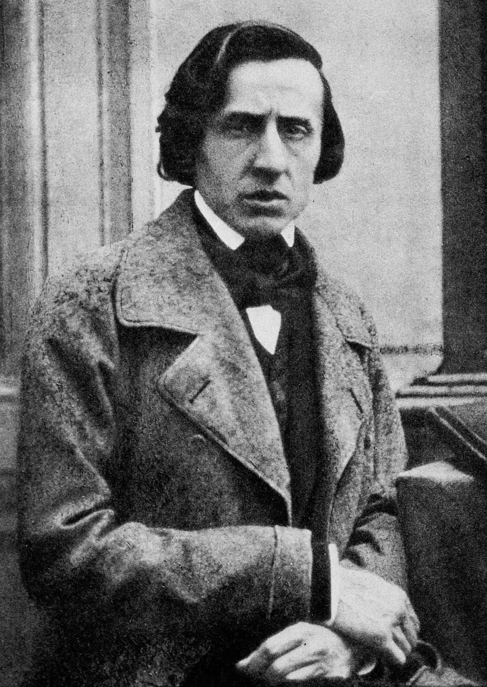
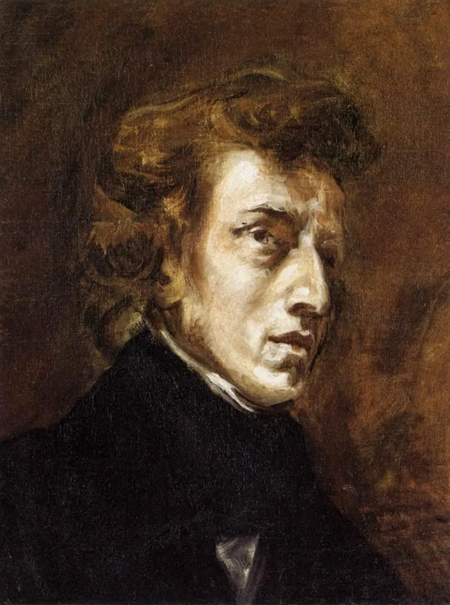
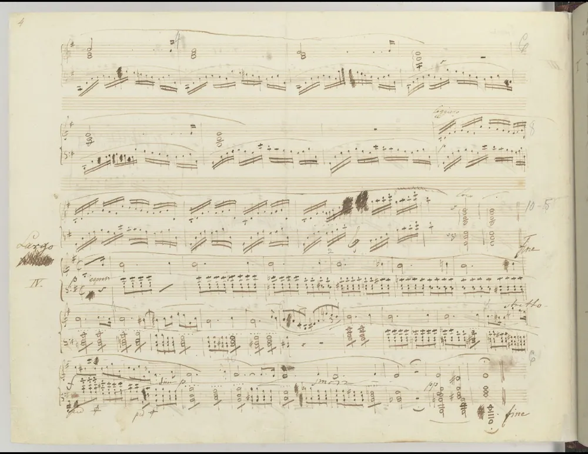

Composer arrangement studio
Frédéric Chopin · sheet music
Choose from 23 complete Chopin scores: 15 preludes, three nocturnes, two waltzes, two mazurkas, and the “Revolutionary” Étude. Read, play, or arrange the sheet music.
Arranging with care
A source staff is not always the melody: in an orchestral score, find the staff carrying the theme. A two-part piano study pairs your selected voice with a source bass; it is not a concert reduction and wide leaps may need redistribution. Saxophone notation is transposed while playback stays at concert pitch. Violin parts stay at concert pitch and are moved by octaves to sit above the open G string. Guitar tab preserves pitch and rhythm but may need a different octave or fingering. Chords are prepared for the Ode to Joy theme only; classical harmony elsewhere requires score study rather than automatic chord guesses. Original ensembles are available only where the source contains those parts. Piano reductions and original classroom studies retain their source identities.
Recordings: Nicholaus P. Brosowsky’s Tonejs-Instruments sample collection, CC BY 3.0; VSCO 2 Community Edition, CC0. Sample credits and processing.
Music · Romantic Era · The Poet of the Piano
Frédéric Chopin · the person

Frédéric Chopin (1810–1849) wrote almost nothing that does not include the piano, and he changed what the instrument could do. Born in Poland and famous in Paris, he turned short pieces — preludes, nocturnes, waltzes, mazurkas — into deeply personal poems, and filled them with the dance rhythms of his homeland.
Who Was Chopin?
Chopin was born in Żelazowa Wola, near Warsaw, in 1810 — his baptism record gives February 22, though his family celebrated March 1. His father was a Frenchman who had settled in Poland and taught French; his mother was Polish. A child prodigy, Frédéric published his first piece, a polonaise, at seven, and was soon playing for Warsaw’s aristocracy. He studied at the Warsaw Conservatory with Józef Elsner.
In November 1830, at twenty, he left Poland to build a career abroad. Weeks later the November Uprising against Russian rule broke out, and after it was crushed he never went home. In 1831 he settled in Paris, where he became a fashionable piano teacher and a star of private salons. He disliked big public concerts and gave only about thirty in his whole life, but his playing — delicate, singing and flexible — was legendary.
From 1838 to 1847 Chopin was the partner of the novelist George Sand (the pen name of Aurore Dupin). The winter of 1838–39, which they spent on the island of Majorca, was cold and wet, and Chopin was seriously ill, but there he finished his 24 Preludes, Op. 28 — one in every major and minor key, a tribute to Bach, whose music he practised every day.
Chopin suffered from a chronic lung illness, usually thought to be tuberculosis. His health collapsed after his separation from Sand, and he died in Paris on October 17, 1849, aged 39. He was buried in Père Lachaise Cemetery; following his wishes, his sister Ludwika carried his heart back to Warsaw, where it rests in the Church of the Holy Cross.
Chopin in a Painting and a Manuscript
The photograph beside his biography makes Chopin one of the first great composers we can actually see. Here a painter shows him at work, and a page shows him writing. Click any picture to enlarge it.


From Warsaw to Paris
- 1810 Born near Warsaw (February 22 or March 1).
- 1817 Publishes his first composition, a Polonaise in G minor, at age seven.
- 1826–29 Studies at the Warsaw Conservatory.
- 1830 Leaves Poland; the November Uprising begins weeks later.
- 1831 Settles in Paris.
- 1832 First Paris concert; becomes a sought-after teacher.
- 1838–39 Winter in Majorca with George Sand; completes the 24 Preludes, Op. 28.
- 1839 The Preludes are published.
- 1848 Gives his last public concert in Paris and tours Britain.
- 1849 Dies in Paris on October 17, aged 39.
Rubato and the Singing Piano
A piano note starts to fade the moment the hammer strikes, so it is hard to make the instrument “sing” like a voice. Chopin, who loved opera, worked on two tools to solve this. The first is rubato — “stolen time.” The player stretches some notes and hurries others, while the overall pulse keeps going, like a singer lingering on an important word.
The second is the sustain pedal. Pressing it lifts every damper off the strings, so notes keep ringing and blend. The other strings, now free, also vibrate in sympathy with the notes being played, giving a richer, glowing sound. Chopin marked pedalling carefully in his scores.
Notice that our player plays the Prelude in strict time, like a metronome. Listen to the human recording below and compare: where does the pianist take time?
Try it on a real piano: silently hold down a key, then strike the note an octave below hard and let go. The held string keeps sounding.
Why are there 24 Preludes?
What is a mazurka?
Who is playing the Minute Waltz?
Read & Play: Five Complete Preludes
Chopin’s preludes are short enough to study whole. Play Prelude No. 7 at full speed, then slow the speed to 60% and follow the chords. Mute the Right hand to hear the bass notes on each downbeat.
Each player holds a complete piece. Use the song map or the Bar box to jump anywhere, click a note to hear it, and Shift-click a second bar to loop a passage. The measure-by-measure guide under each score follows the music as it plays; mute a hand or a part to hear one line alone. Every player links to the complete printed score for printing.
Prelude in A major, No. 7 · complete, 16 bars
Prelude in E minor, No. 4 · complete, 25 bars
Prelude in C minor, No. 20 · complete, 13 bars
Prelude in B minor, No. 6 · complete, 26 bars
Prelude in D-flat major, No. 15 (“Raindrop”) · complete, 89 bars
Prelude in C major, Op. 28 No. 1 · complete
Prelude in A minor, Op. 28 No. 2 · complete
Prelude in G major, Op. 28 No. 3 · complete
Prelude in D major, Op. 28 No. 5 · complete
Prelude in E major, Op. 28 No. 9 · complete
Prelude in C-sharp minor, Op. 28 No. 10 · complete
Prelude in B major, Op. 28 No. 11 · complete
Prelude in F-sharp major, Op. 28 No. 13 · complete
Prelude in E-flat minor, Op. 28 No. 14 · complete
Prelude in G minor, Op. 28 No. 22 · complete
Nocturne in B-flat minor, Op. 9 No. 1 · complete
Nocturne in E-flat major, Op. 9 No. 2 · complete
Nocturne in E minor, Op. 72 No. 1 · complete
Waltz in D-flat major, Op. 64 No. 1 (“Minute Waltz”) · complete
Waltz in B minor, Op. 69 No. 2 · complete
Mazurka in F-sharp minor, Op. 6 No. 1 · complete
Mazurka in G-sharp minor, Op. 33 No. 1 · complete
Étude in C minor, Op. 10 No. 12 (“Revolutionary”) · complete
Hear Chopin's Music
The first recording is the Prelude you just read. The Minute Waltz is played by the pianist and composer Sergei Rachmaninoff in an early recording.
- Compare the human recording of the Prelude with the score player. Where does the pianist slow down or wait?
- In the Nocturne, the left hand is soft, wide chords held together by the pedal; the right hand sings over them.
- The “Minute Waltz” does not take a minute — the nickname means “small” (minute), not 60 seconds.
Chopin's Key Contributions
Nearly everything Chopin wrote includes the piano. He explored its singing tone, its pedal and its colors more deeply than almost any composer before him.
His four Ballades turned a story-telling idea into a new kind of large piano piece, and later composers borrowed the name.
His études drill one technical problem each, yet they are played in concerts as finished works of art, not just exercises.
The 24 Preludes, Op. 28, move through all the major and minor keys as a nod to Bach. Some last less than a minute.
His mazurkas and polonaises carried the rhythms of Polish folk dances into the salons and concert halls of Paris.
He took the nocturne, a "night piece" begun by John Field, and made it the model for a lyrical melody over a flowing accompaniment.
Chopin's Legacy Today
Chopin’s études turned finger exercises into concert music, and his harmonies — chromatic, colourful, full of unexpected chords — influenced composers from Liszt to Debussy and the jazz pianists who followed. Nearly every serious pianist learns his music.
In Poland he is a national hero. His mazurkas and polonaises carried Polish dance and identity into the salons of Europe at a time when Poland did not exist as an independent state. Warsaw holds the International Chopin Piano Competition every five years, and the city’s airport is named after him.
Find the Complete Sheet Music
These public-domain editions are free to download, print and play. The player above includes one complete prelude and two clearly labeled opening studies; use the complete scores for all notes, dynamics and pedal markings.
- 24 Preludes, Op. 28 ↗IMSLP — first editions and later editions
- Prelude No. 7 — engraved edition ↗Mutopia Project — free PDF and MIDI
- Prelude in E minor, Op. 28 No. 4 ↗Mutopia Project — complete piano score, public-domain Peters edition
- Prelude in C minor, Op. 28 No. 20 ↗Mutopia Project — complete piano score with the chord accompaniment
- All of Chopin on IMSLP ↗Nocturnes, waltzes, mazurkas, études and more
Practice Problems
Review: Biography · The musical idea · Read and play.
Use the score, the recordings and the biography above.
Easy1. In which city did Chopin live from 1831 until his death?
Easy2. How many bars long is Prelude No. 7 (not counting the pickup)?
Medium3. How many sharps are in the key signature of Prelude No. 7?
Medium4. What does rubato mean?
Medium5. Chopin wrote one prelude in each major and minor key. If there are 12 major and 12 minor keys, how many preludes is that?
Medium6. What happens when you press the damper (sustain) pedal?
Challenge7. A string vibrates at 110 Hz. What is the frequency of its third overtone-series member (3 × f)?
Challenge8. Chopin was born in 1810 and died in 1849. In what year did he finish the Preludes, at about age 28?